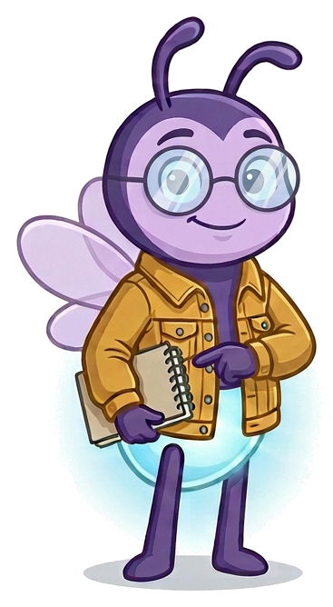

A strange point is a question, not a mistake
The students measured things and made graphs. In every graph, one point doesn't follow the pattern. Find it, choose the best questions to ask about it, and find out what really happened. Sometimes a point that doesn't fit leads to a discovery.
Los estudiantes midieron cosas e hicieron gráficas. En cada gráfica hay un punto que no sigue el patrón. Encuéntralo, elige las mejores preguntas sobre él y averigua qué pasó de verdad. A veces, un punto que no encaja lleva a un descubrimiento.
Who is playing?¿Quién juega?
What grade are you in?¿En qué grado estás?

💡 For the grown-up
🪐 A planet found by a point that didn't fitUn planeta hallado por un punto que no encajaba
After Uranus was discovered in 1781, astronomers saw that it did not move exactly where Newton's laws predicted. Instead of ignoring the strange measurements, Urbain Le Verrier asked: what if another planet is pulling on it? He calculated where that planet should be. On the night of September 23, 1846, Johann Galle looked there with a telescope at the Berlin Observatory and found Neptune, about one degree from the predicted spot.
Después de que se descubrió Urano en 1781, los astrónomos vieron que no se movía exactamente donde predecían las leyes de Newton. En vez de ignorar esas mediciones extrañas, Urbain Le Verrier se preguntó: ¿y si otro planeta lo está atrayendo? Calculó dónde debía estar ese planeta. La noche del 23 de septiembre de 1846, Johann Galle miró allí con un telescopio en el Observatorio de Berlín y encontró a Neptuno, a cerca de un grado del lugar predicho.
📡 The noise that would not go awayEl ruido que no se iba
In 1964, Arno Penzias and Robert Wilson heard a steady hiss in a giant horn antenna in Holmdel, New Jersey. They checked everything, even removing pigeons nesting in the antenna and cleaning up after them. The hiss stayed. It was not a mistake: it was the cosmic microwave background, light left over from the early universe. They won the Nobel Prize in Physics in 1978.
En 1964, Arno Penzias y Robert Wilson oían un siseo constante en una enorme antena de bocina en Holmdel, Nueva Jersey. Revisaron todo, incluso sacaron unas palomas que anidaban en la antena y limpiaron lo que dejaron. El siseo seguía. No era un error: era la radiación de fondo de microondas, luz que quedó del universo joven. En 1978 recibieron el Premio Nobel de Física.